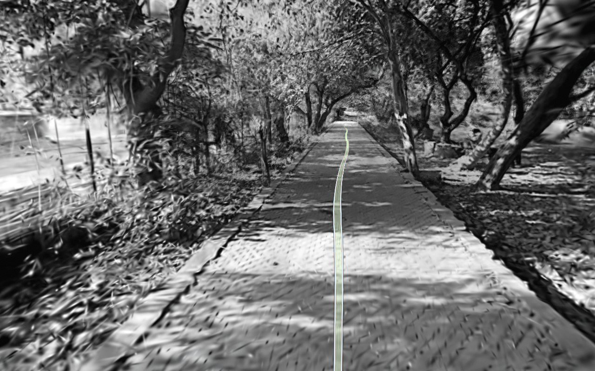

Getting the 3-D place ready
You are here
Tap the pathClick the path to jump there
Speed:
The whole path the camera took. TapClick the line to go down there.
A 3-D place built from camera photos. Not a video.

Getting the 3-D place ready
You are here
Tap the pathClick the path to jump there
The whole path the camera took. TapClick the line to go down there.
Soybean field, Soybean rows and Green rows. Source images: The Rosario Dataset, CIFASIS-CONICET, CC BY 4.0.
Black and white, because this camera’s two eyes see no colour.
From our depth model, nrs-large. It looked at the photo pair of each keyframe and worked out how far away each point is. The map builder starts from these points, then fits the place to the photos. Compare the old depth and the new depth
A computer built it from the photos. No person touched it up.
All places, and where each is not perfect